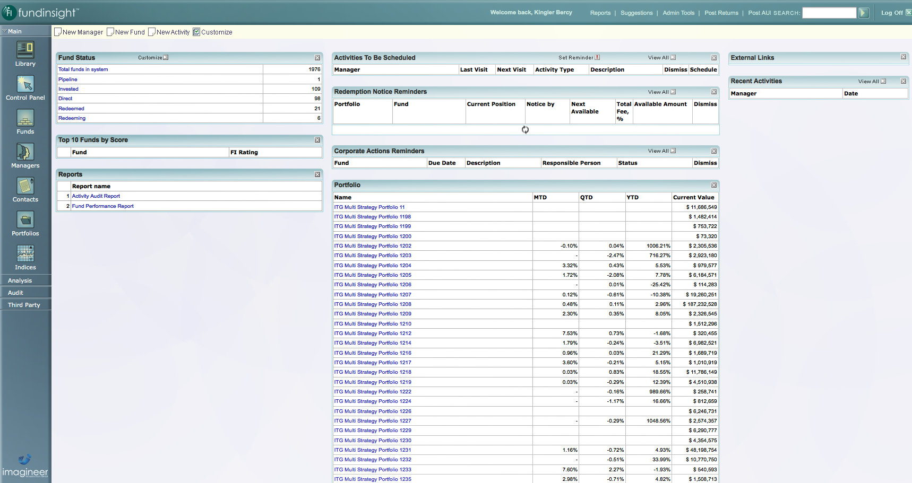
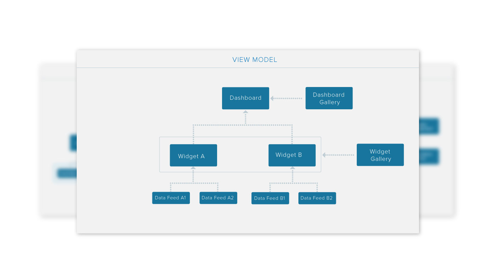
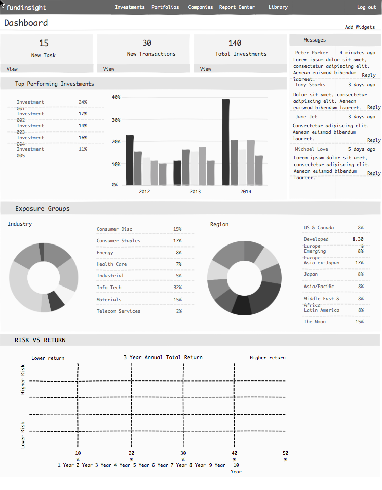
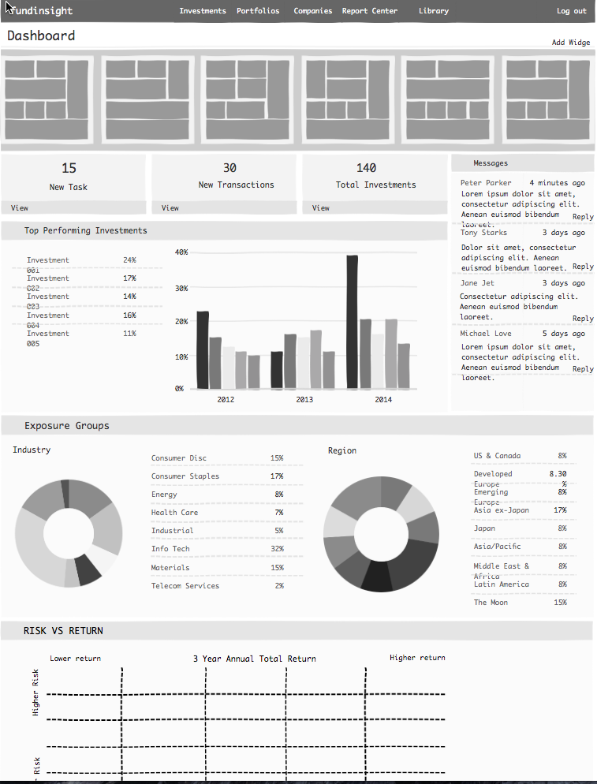
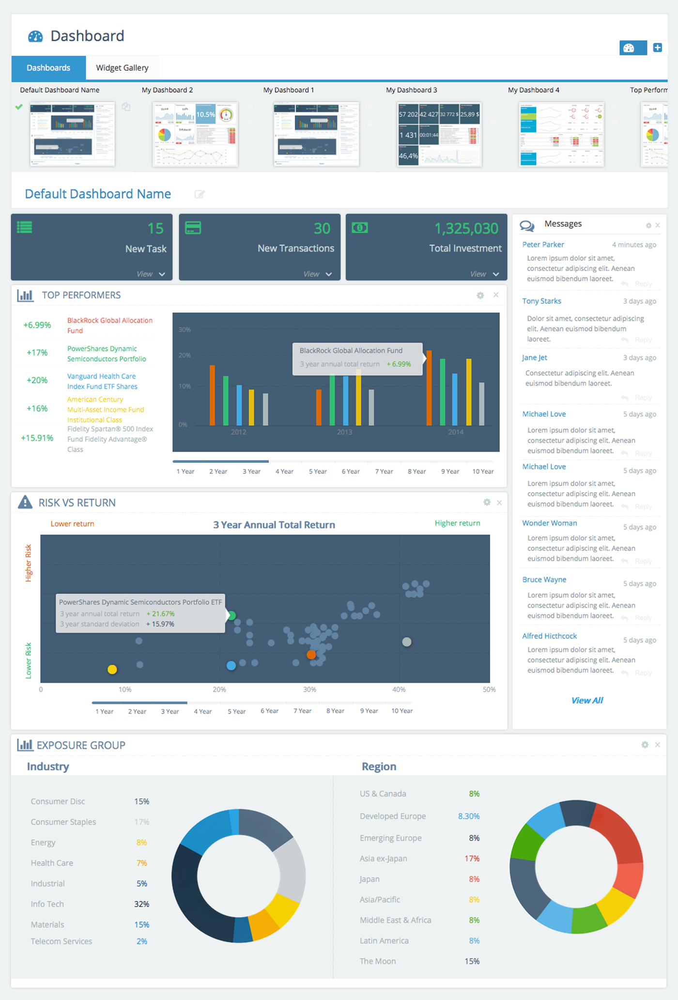
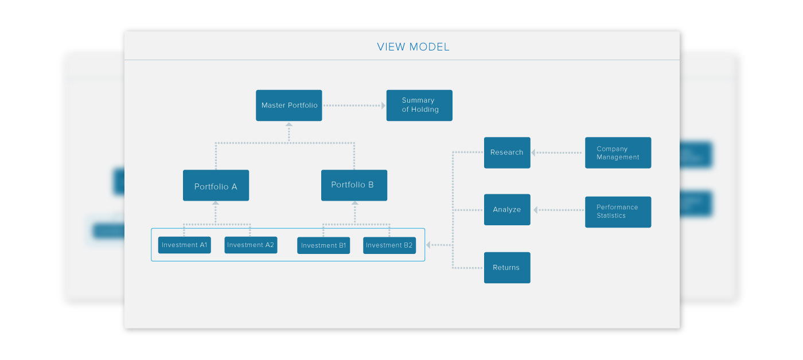
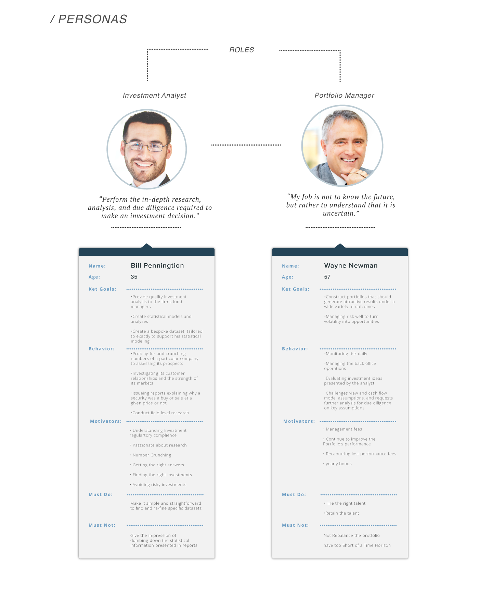
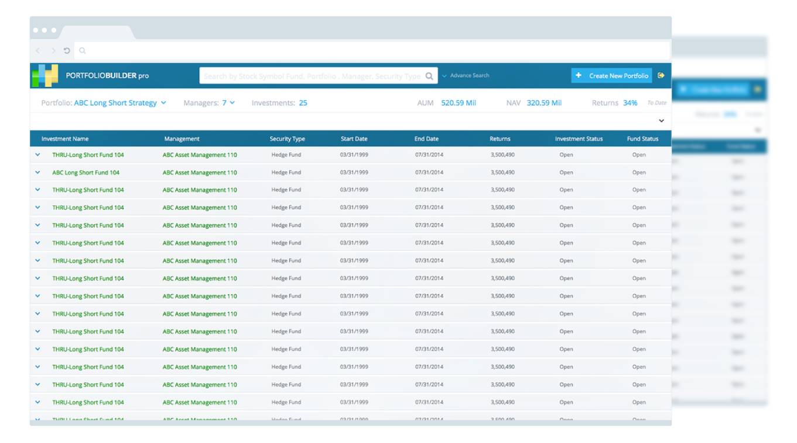
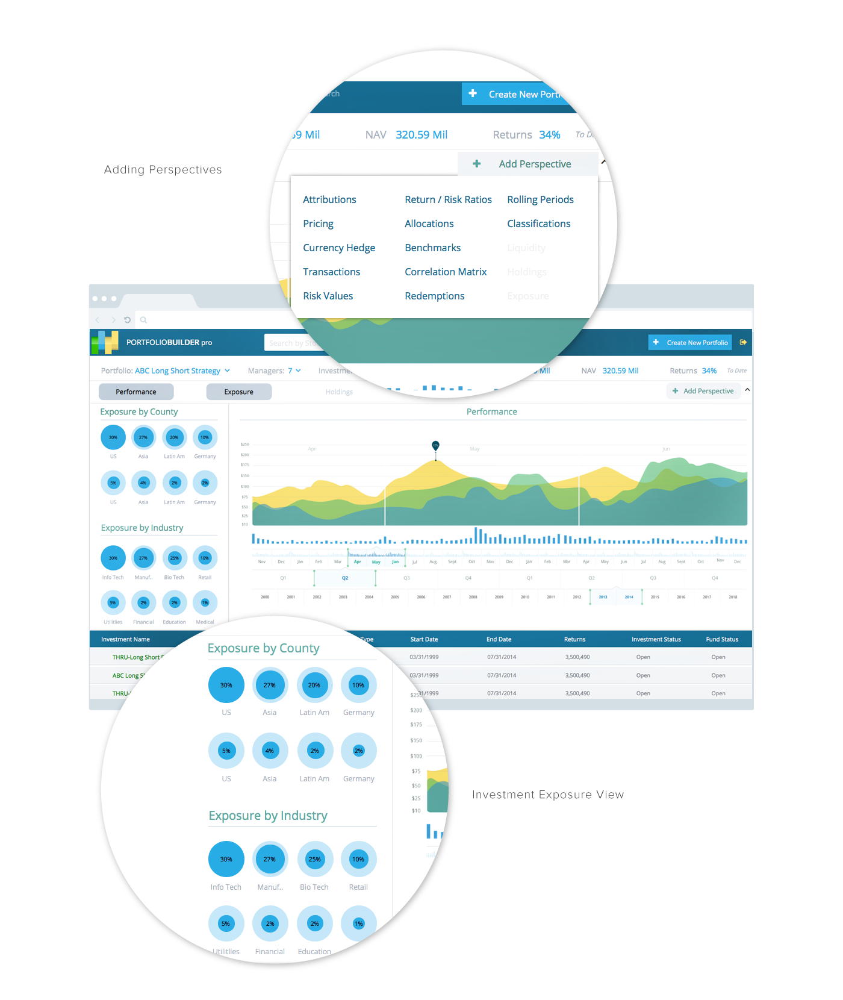

-
Fund Dashboard
Design a dynamic and customizable dashboard application to provide actionable, summarized investment management information to fund managers and investment analysts across multiple investment sectors and asset classes.
Project:
Fund Management Dashboard
Client:
Imagineer Technology Group
Date:
July - December 2014
Project Description
Design a dynamic and customizable dashboard application to provide actionable, summarized investment management information to fund managers and investment analysts across multiple investment sectors and asset classes. The dashboard interface should provide a logical structure for going beyond information presentation to include predictions and recommendations so fund managers can progress from ‘what happened?’ to ‘what can happen?’, and on to ‘what actions can be taken?’
Challenge
As a leading provider of financial management software tools, Imagineer Technology Group recognized the importance and value of providing both an intuitive and informative user experience to the users of their flagship product Fundinsight.
Their application’s home page was a static dashboard, which displayed cumbersome tabular information that spanned both horizontally and vertically past the viewable screen area when multiple widgets were added, which made it difficult to read. It lacked the basic constructs to build from and required re-imagining the user interface paradigm altogether.
Solution
Design the view-model and paradigm for developing a fully customizable dashboard application that would afford investment analysts and fund managers the ability to make quick investment decisions across multiple perspectives.
We recommended a new dashboard application that would provide the user the ability to create multiple dashboards within different investment contexts and populating their custom dashboard with informational widgets easily manipulated through a user-friendly widget gallery. Users could even share dashboards with other users and designate a custom dashboard as their new home page default.
 ThruDesigns worked closely with the client’s development team to guide them through the individual use-cases and features of the proposed dashboard. Once the view model was developed and finalized, ThruDesigners proceeded to build the wireframes and a high fidelity prototype to illustrate the dashboard’s new interactive features. With this guidance and thorough style guide documentation in hand, Thrudesigns lowered the learning curve and coding error rate for the team and allowed them to meet an aggressive release deadline. Through the company’s unique and personalized engagement process, the team also got familiarized with the process of documenting features from use-cases and assessing accurately the effort/time required to implement a feature and devising the test plan to validate user-acceptance of the application. The redesigned dashboard application is now flexible, intuitive and able to accommodate several custom dashboards containing different types of useful widgets in various configurations.

Impact
Localized important investment content in multiple asset classes, and greater speed and efficiency in delivering key investment information to fund managers and investment analyst. Our solution allows Imagineer to deliver key functionality to their customers in the investment management sector. This will greatly enhance the customer experience and give Imagineer Technology Group a web application that accurately reflects their commitment to building exceptional software in a highly competitive market.
 -
Portfolio Builder
Design a consolidated way to conduct actionable investment research across multiple perspectives and strategies.
Project:
Fund Management Dashboard
Client:
Imagineer Technology Group
Date:
July - December 2014
Challenge
Design a consolidated way to conduct actionable investment research across multiple perspectives and strategies.
Several analyst and portfolio managers were interviewed to gain insights into their core need’s wants, and desires. We descoverd that analyst and portfolio manager continusly encountered cases where they had difficulties sifting through substantial sets of data and investment reports in order to effectively and rapidly make accurate decisions about buy and sell recommendations. When faced with this challenge, users invariably used a tabular display or resorted to exporting this information to Microsoft Excel for review and analysis. These solutions remained constrained by screen size and offered limited understandability to users due to the variety of attributes being compared or analyzed.
Solution
Over the course of several engagements, ThruDesigns deciphered patterns of solutions for this class of applications and category of challenge. In many cases, it simply did not suffice to just throw together a trendy dashboard with colorful charts. The user experience still suffered from constant context switching going from global, aggregate and detail views of this information. However, each implementation offered insight and rewarded ThruDesigns with an inventory of cases, patterns and design iterations to study.
As a result of our research and interviews with the user groups, we designed Portfolio Builder to constitute a reusable framework of views and view models for data/fund/portfolio analysis. These UI elements and their controllers delivers the user experience sought in the majority of scenarios where customer applications warranted this sort of treatment to their data.
 Impact
With our library, we are now able to streamline solution implementations that cuts design and development times and costs by half! Users of these applications are now able to view, for example, summary information about various investment benchmarks and quickly weigh risk versus reward probabilities at any scale with accuracy and fluidity. The engineers at ThruDesigns will soon bring this fantastic asset to the development and consulting community in FinTech via a cloud-enable Platform-as-a-Service.
-
Ratings Application
Design a corporate ratings application that improves and reduces the time S&P analysts construct ratings packages for committee approval.
Project:
Fund Management Dashboard
Client:
Imagineer Technology Group
Date:
July - December 2014
Challenge
Design a ratings application that provides the analyst the ability to analyze the creditworthiness of a particular company. The application should provide a seamless workflow for uploading excel formatted spreadsheets of a company’s financial data as the initial data input method and output a 90 plus page document that delineates recommended rating scores for committee approval and publishing.
As a leading provider of ratings services and high-quality market intelligence, S&P recognized the importance and value of providing an intuitive and informative user experience to its analysts to ensure that their end products are of the highest quality and accuracy possible. At the time of engagement, the workflow for an event-driven ratings score package was fragmented into a half dozen applications and database interfaces. Analysts worked primarily in Microsoft Excel and World, which had a number of limitations in supporting complex algorithmic risk calculations. Data was displayed only in tabular form, which mostly scrolled horizontally and vertically past the viewable screen area making it difficult to do side by side comparative analysis.
Solution
Design the view-model and taxonomy for developing a context-driven workflow based on the analyst, industry, and company type. We extended the view-model to incorporate sub-anchor score categories that are visible depending on upstream user or system selection(s).
We recommended a wizard-like application that would provide the user with a guided experience when initiating a credit ratings package. We also recommended the inclusion of persistent and on-demand visual indicators showing the various workflow stages of a ratings package and the login user’s currently associated task. We also designed a consolidated view of all tools involved in analyzing and rationalizing a recommended rating score,
worked closely with the S&P’s development team to guide them through the individual use-cases and features of the proposed ratings app. Once the view-model was specified, ThruDesigners proceeded to build the wireframes and a high fidelity prototype to illustrate the ratings applications rating package creation and management features.
Impact
We streamlined S&P’s event driven ratings process for greater speed and efficiency in performing risk and credit analyses, and publishing the results. These changes greatly enhanced the analyst’s experience and gave Standard and Poor’s an internal web application that accurately reflects their commitment in providing exceptionally high-quality market intelligence to the financial markets.
-
e-Commerce Admin App
Design the user experience for processing orders and managing product offers for NYSE’s clients, vendors, staff administrators, and account executives.
Project:
Fund Management Dashboard
Client:
Imagineer Technology Group
Date:
July - December 2014
Design the user experience for processing orders and managing product offers for NYSE’s clients, vendors, staff administrators, and account executives. The design must provide the ability to communicate efficiently when executing a transaction. Account executives and managers should have the ability to delegate product and license configuration tasks during the ordering process.
Challenge
NYSE launched a new e-commerce portal application for its top members. The objective is to provide a fast and efficient way of selling and configuring real-time and historical market data access to its members and vendor partners. As a result of the complex manner by which a license is structured and configured, the experience can get very confusing and time consuming for the client when utilizing their e-Commerce application.
Once the license is purchased, it takes an estimate 6 to 8 months before granting them access to the market data they were entitled. The goal was to use the latest and most effective UX Design methodologies to provide NYSE with a solutions for making the process more streamlined and intuitive.
Solution
Design the view-model and taxonomy for a product catalog management system with multiple sub categories of product configuration options with pricing impact.
Being unwilling to revamp their complex license configuration process, we had to design a two part guidance and assistance features whereby the user would be guided through a series of questions in order to configure specific products options based on their answer. To make the experience more human centric, we designed a discussion and collaboration module within the application that account executives and administrators could be accessed on-demand and assist the client with their purchase questions and/or concerns.
Members of ThruDesigns worked closely with NYSE’s Technology development team in order to guide them through the individual use-cases and features list. Once the view model was developed and finalized, we proceeded to building the wireframes and high fidelity prototypes in order to illustrate the improved e-commerce ordering process.
Impact
These changes greatly improved the efficiency with which market data products are ordered and how NYSE was able for the first time monitor order workflows in real-time thereby allowing them to put into place ux governance policy that is designed to improve the experience of both internal and external users of the Connect e-Commece system.